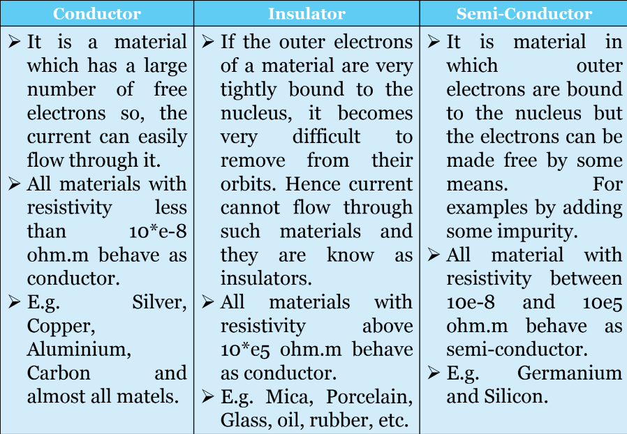
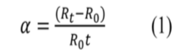

Electrical energy used in our homes, offices, shops factories is in the form of a.c. (alternating current).
There are 3 types of current that flows in the electrical circuits.
I. Direct Current or DC
II. Fluctuating Current
III.Alternating Current or AC
A rectangular coil AC having N turns and rotating in a uniform magnetic field with a constant angular velocity in anti-clockwise direction is shown in fig.
A rectangular coil AC having N turns and rotating in a uniform magnetic field with a constant angular velocity in anti-clockwise direction is shown in fig.
A rectangular coil AC having N turns and rotating in a uniform magnetic field with a constant angular velocity in anti-clockwise direction is shown in fig.
When the coil has rotated through an angle θ in time t seconds as shown in fig,its peripheral velocity can be represented b
The emf induced in the side A of the coil is entirely due to the component of velocity perpendicular to the magnetic field i.e. Vsinθ
Hence, the emf induced in one side of the coil at time t is given by,
e = B l v sin θ volts
Total emf generated in both sides of the coil is
e = 2 Blv sin θ volts
If the coil has N turns in series, the total emf induced in the coil at any instant t is given by
e = N x 2 B l v sin θ volts
The coil makes f revolutions per second. So, the linear distance travelled per second or peripheral velocity v is given by
v = f x 2π x b/2
Substituting the value of v,
e = N x 2Bl(π b f)sin θ volts
= 2π N B I b f sin θ
= 2π N B f (i b) sin θ
= 2π N B f A sin θ volts
where A = lb = area of the coil.
When θ=90 , sinθ=1,hence e has maximum value, say Em,
Em = 2 π f N B A =N B A w(w=2πf)
Hence,
e =Em sin θ volts or
= Em sin wt volts (θ = wt)
This emf can be represented by a sine wave as shown in fig. in which Em is the maximum value of emf and e is the emf when the coil has rotated through an angle from the position of zero emf.
When θ varies from 0 to 180, the emf is considered positive and it is negative when θ varies b/w 180 to 360.
Thus, in one cycle of the waveform, there is one positive half-cycle and one negative half- cycle.
The number of such complete cycles that occur in one second is called the frequency of the emf.
The duration of each cycle is called periodic time or time period.
The steady current (d.c.) which flows through a circuit for a given time transfer same charge as transferred by the alternating current when flows through the same circuit for same time is called average value of the alternating current.
The average or mean value of an a.c. quantity over a given interval is the sum of all instantaneous values divided by number of values taken over that interval.
Average Value = Area under the curve/Length of the Base of the curve
This method is based on the definition of the average value of the alternating current.
The average value can be obtained as:
A resistor is an electrical component that limits or regulates the flow of electrical current in an electronic circuit.
Resistors are one of the important blocks of electrical circuits.
Resistors are one of the important blocks of electrical circuits.


Resistance of the conducting material is calculated using

The resistance of a conducting material is found to
1. be directly proportional to the length L of the material.Electrical resistivity (also called specific electrical resistance or volume resistivity) and its inverse, electrical conductivity, is a fundamental property of a material that quantifies how strongly it resists or conducts electric current.
Resistivity is commonly represented by the Greek letter ρ (rho). The SI unit of electrical resistivity is the ohm-meter (Ω⋅m).
The resistance of an object depends in large part on the material it is made of. Objects made of electrical insulators like rubber tend to have very high resistance and low conductivity, while objects made of electrical conductors like metals tend to have very low resistance and high conductivity.
The resistance of an object also depends on the size and shape of an object because these properties are extensive rather than intensive. For example, a wire's resistance is higher if it is long and thin, and lower if it is short and thick.
Resistance of almost all the materials changes with the change in the temperature.
Then the change in resistance is found to be I. directly proportional to its initial resistance, and II. directly proportional to the change in temperature. • Thus, α= constant know as the temperature co-efficient of resistance.
The variation of resistance with change in temperature of any material is governed by this property.
Temperature co-efficient of resistance α is defined as the change in resistance per unit rise in temperature per ohm original resistance.
Usually temperature co-efficient is taken at a particular reference temperature which is normally taken as 0 degree Celsius.
It is denoted by α0
Rewriting the equation (1), Rt = R0*[1+α0*t]
If at a standard temperature of o degree Celsius a material has a resistance of R0 ohms,
at t1 degree Celsius resistance of R1 ohms and
at t2 degree Celsius resistance of R2 ohms, then

If temperature co-efficient ao and resistance Ro are not given then the relation between the known resistance Rt1 and t₁ degree Celsius and the unknown resistance Rt2 and t₂ degree Celsius can be found as follows:
Rt1 = resistance at t₁ degree Celsius
Rt2 = resistance at t₂ degree Celsius
Suppose,
αt=temperature co-efficient of resistance at t₁ degree
Celsius
αt1 = Slope of the graph / resistance at t₁ degree Celsius Slope of the graph= αt1* Rt1